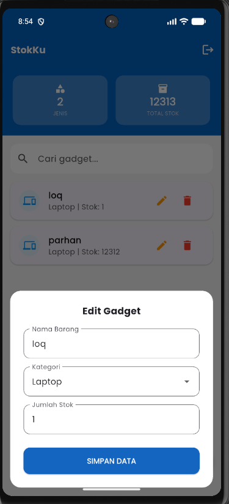

01 StokKu
StokKu membantu admin tempat penyimpanan mencatat dan melihat stok gadget. Barang yang dicatat bisa berupa laptop, HP, atau TV.


Saat belajar membuat aplikasi mobile, saya menggunakan Flutter dan Dart untuk membuat StokKu.
StokKu membantu admin tempat penyimpanan mencatat dan melihat stok gadget. Barang yang dicatat bisa berupa laptop, HP, atau TV.
